文字
背景
行間

_
 川越・地域活性化研修
川越・地域活性化研修
8月5日(金) 課題研究フィールドワークの一環として、希望生徒を対象に埼玉県川越市にて地域活性化研修を行いました。学校からバスで川越市に向かい、生徒はそれぞれフィールドワークや観光客・地元商店の方にインタビュー調査をしました。
川越市には、歴史的建造物や文化財、地元の食材を使ったグルメなど、さまざまな魅力がありました。また、レトロな景観を守るための工夫も施されており、地域活性化の成功の背景を学ぶことができました。
参加した生徒には、今回の経験を佐倉市の地域活性化やそれぞれの課題研究に活かして欲しいと思います。
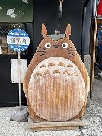 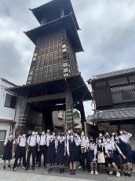
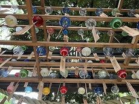 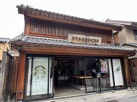
川越市には、歴史的建造物や文化財、地元の食材を使ったグルメなど、さまざまな魅力がありました。また、レトロな景観を守るための工夫も施されており、地域活性化の成功の背景を学ぶことができました。
参加した生徒には、今回の経験を佐倉市の地域活性化やそれぞれの課題研究に活かして欲しいと思います。
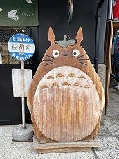 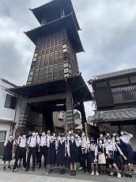
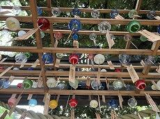 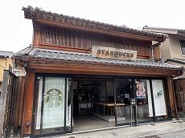
佐倉市役所とワークショップ
投稿日時 : 2022/07/21
 探究担当
探究担当
普通科課題研究は夏を迎えフィールドワーク等の調査時期に入りました。そのスタートとして佐倉市役所から４名の講師を迎えワークショップを開催しました。テーマは「観光」「防災」「特産物」「佐倉学」の４つです。１５分のプレゼンテーションを受けて、４５分間質疑する流れです。本校では「質問は当たり前の文化」が定着しており、活発に手が上がります。学校外の方、大人との対話が生徒の成長につながります。夏休み中、インタビュー調査等で様々な企業・団体にご迷惑をおかけします。本校では全生徒が課題研究に取り組んでおり、その一環ですのでどうぞ御理解ください。
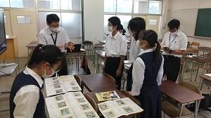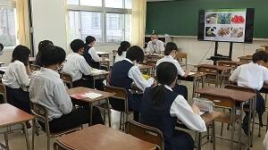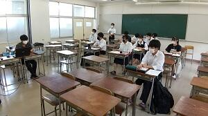
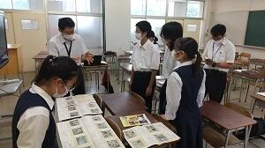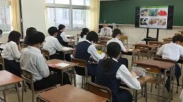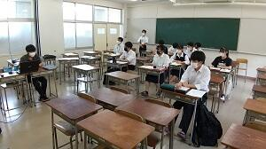
 令和４年度 鍋山祭
令和４年度 鍋山祭
7月1日(金)・2日(土) 鍋山祭が行なわれました。今年のテーマは「水月鏡花～心で味わう鍋山の祭り～」です。
昨年度はコロナ禍のため校内発表のみでしたが、本年度は換気や消毒等の感染対策に留意し、保護者（１名）の方の来場時間を学年ごとに区切り、入場制限を設けた上で、校内発表・保護者公開を行うこととなりました。
生徒たちは長期間懸命に準備に取り組んでおり、当日は各クラス凝った装飾が施されていました。また、心から文化祭を楽しむ生徒の様子が印象的でした。
昨年度はコロナ禍のため校内発表のみでしたが、本年度は換気や消毒等の感染対策に留意し、保護者（１名）の方の来場時間を学年ごとに区切り、入場制限を設けた上で、校内発表・保護者公開を行うこととなりました。
生徒たちは長期間懸命に準備に取り組んでおり、当日は各クラス凝った装飾が施されていました。また、心から文化祭を楽しむ生徒の様子が印象的でした。
本日、鍋山祭にご来場いただいた保護者の皆様、また関係者の皆様に心より感謝申し上げます。
受賞クラスは以下の通りです。
【鍋山大賞】 ３年Ｃ組 千と千尋の神隠し
【部・同好会・有志大賞】 ワイルドなやつら
【ＣＭ大賞】 ３年Ｂ組 アラジン
【ステージ発表部門】 該当なし
【部・同好会・有志部門賞】 生物部 Get back the spirit of hunting ～しじみ釣り体験～
【劇・映画・展示部門賞】 該当なし
【部・同好会・有志大賞】 ワイルドなやつら
【ＣＭ大賞】 ３年Ｂ組 アラジン
【ステージ発表部門】 該当なし
【部・同好会・有志部門賞】 生物部 Get back the spirit of hunting ～しじみ釣り体験～
【劇・映画・展示部門賞】 該当なし
【おばけ屋敷・脱出ゲーム部門賞】３年Ｆ組 小野児病棟～偽りのカルテ～
【アトラクション部門賞】 ３年Ｈ組 SPACE MOUNTAIN
【アトラクション部門賞】 ３年Ｈ組 SPACE MOUNTAIN
【販売・縁日部門賞】 ２年Ｃ組 ティンカーベルの作り立て工房
【装飾賞】 １年Ｄ組 不思議の国のカジノ
２年Ｇ組 ジブリカフェ
３年Ａ組 塔の上のラプンツェル
【学校長特別賞】 化学部 超エターナル化学
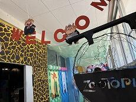 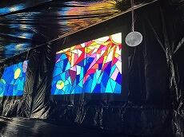 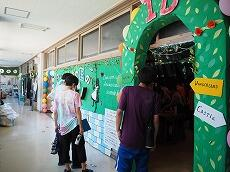 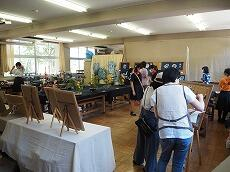 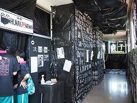
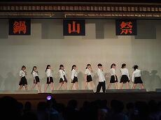 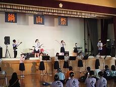
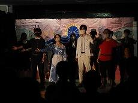 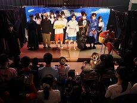 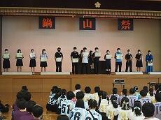
 文化祭の一般公開は行いません。
文化祭の一般公開は行いません。
文化祭（鍋山祭）の一般公開について（お知らせ）
平素より本校の教育活動に御理解・御協力を賜り、心より感謝申し上げます。
今年度も新型コロナウイルス感染拡大防止対策のため、一般の方（中学生も含む）への公開は行いません。御理解のほど御願い申し上げます。
平素より本校の教育活動に御理解・御協力を賜り、心より感謝申し上げます。
今年度も新型コロナウイルス感染拡大防止対策のため、一般の方（中学生も含む）への公開は行いません。御理解のほど御願い申し上げます。
普通科２学年「小さな発表会」
投稿日時 : 2022/06/14
探究担当
6月14日(火)の２学年普通科探究学習の様子を紹介します。２学年は週２時間「探究学習＝課題研究」の時間があります。高校生活の主研究と位置づけています。この日は研究計画書の口頭発表会（「小さな発表会」と名付けています）を開催しました。５人の小グループに分かれ、各自の研究計画を言語化し、グループ内で助言をもらう会です。本校の探究学習は発表活動を重視しており、そのスタートとなるイベントです。
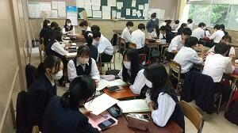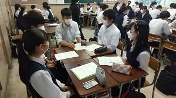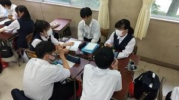
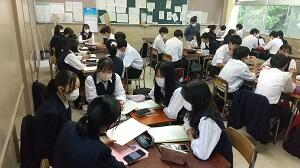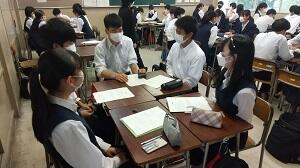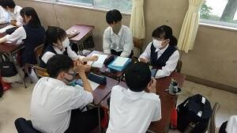
「佐倉スイーツ」キックオフ
投稿日時 : 2022/06/13
探究担当
6月11日(土)、スイーツ開発を通して佐倉市や地域の課題解決を目指す産学官連携プログラム「MIRAI KOMINKA for School」、通称「佐倉スイーツ」のキックオフイベントが本校で開催されました。当日は本校4チームの他、佐倉東高校５チームが参加し、今後、千葉市や船橋市の高等学校も加わる予定です。佐倉市役所職員と地元農家のプレゼンテーション、そして７店舗のスイーツ開発協賛店との打ち合わせと会は進行しました。多くの大人、専門家との関わりにより、生徒が大きく成長することを期待します。
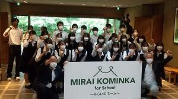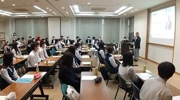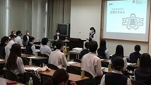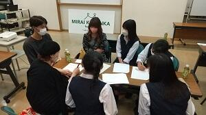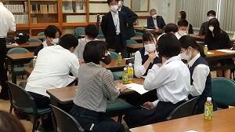
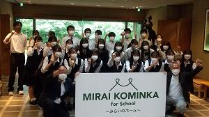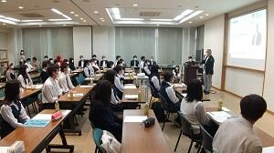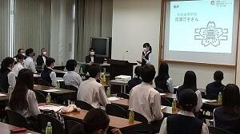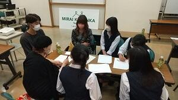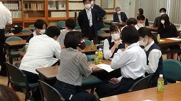
 エピペン・AED研修会
エピペン・AED研修会
6月9日14:30～15:30 本校の学校薬剤師の方を講師にお招きし、職員を対象にエピペン・AED研修会を行いました。
アナフィラキシーやAEDに関する基礎知識を学び、症状への対応手順を確認しました。
また、エピペンについてはトレーナーを使用し、実践練習をしました。
現在本校のAEDは、本館昇降口、体育館入口、家庭科室入口の三か所に設置してあります。
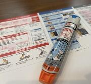 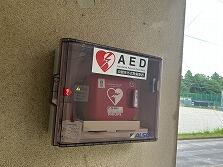
アナフィラキシーやAEDに関する基礎知識を学び、症状への対応手順を確認しました。
また、エピペンについてはトレーナーを使用し、実践練習をしました。
現在本校のAEDは、本館昇降口、体育館入口、家庭科室入口の三か所に設置してあります。
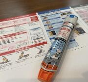 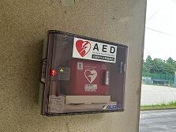
令和４年度 体育祭
5月26日(木) 令和４年度体育祭が行われました。天候にも恵まれ、生徒の笑顔と活気が溢れる一日となりました。
今回は、昨年度の競技から新たにクラス対抗リレーが追加されました。
クラスの思いを背負ってバトンを繋ぐ選手と、懸命に応援するクラスメイトの姿が印象的でした。
次回は、１０月の球技大会です。更なる活躍を期待します。
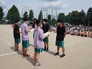
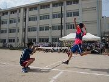
各競技の優勝チームを紹介します。
【クラス対抗リレー】 １年Ａ組・２年Ｄ組・３年Ｃ組
【男子ソフトボール】 ３年Ｆ組
【男子サッカー】 ３年Ｃ組ａ
【男子バレーボール】 ２年Ｆ組ａ
【女子ドッジボール】 ３年Ａ組
【女子サッカー】 ３年Ａ組
【女子バレーボール】 ３年Ｇ組ａ
今回は、昨年度の競技から新たにクラス対抗リレーが追加されました。
クラスの思いを背負ってバトンを繋ぐ選手と、懸命に応援するクラスメイトの姿が印象的でした。
次回は、１０月の球技大会です。更なる活躍を期待します。
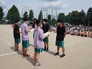
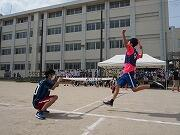
各競技の優勝チームを紹介します。
【クラス対抗リレー】 １年Ａ組・２年Ｄ組・３年Ｃ組
【男子ソフトボール】 ３年Ｆ組
【男子サッカー】 ３年Ｃ組ａ
【男子バレーボール】 ２年Ｆ組ａ
【女子ドッジボール】 ３年Ａ組
【女子サッカー】 ３年Ａ組
【女子バレーボール】 ３年Ｇ組ａ
東大ー佐倉オンライン「考える会」
投稿日時 : 2022/05/23
探究担当
5月22日（日）、東大－佐倉オンライン「考える会」を開催しました。東大生5名、本校生14名、東大教授1名、本校職員6名が参加し、3時間にわたり対等な立場で対話をおこないました。一方的に知識を与えられるのではなく、ともに悩み考えることがこの会の目的です。今回の問いは、①夢と出会うストーリー、②共通テストは思考力につながるのか？、③ICT時代の生き方、④コロナ禍の価値観変化、の４つです。参加者は５つのブレークアウトルームに分かれ、存分に対話を行いました。
不祥事防止兼情報セキュリティ職員研修
投稿日時 : 2022/04/28
 sakura-h
sakura-h
4月15日(木) 15:20-16:20 不祥事防止兼情報セキュリティ職員研修を行いました。
情報セキュリティについては、機密性による情報資産の分類について確認し、セキュリティ確保の大切さを学びました。
また、不祥事根絶に向けて、職員間で意見交換をしながら、教職員一人一人の自覚の重要性を再認識しました。
学校にかかわるすべての人たちが、笑顔で日々を送ることができるよう、今後も尽力して参ります。
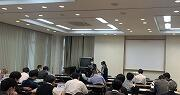
情報セキュリティについては、機密性による情報資産の分類について確認し、セキュリティ確保の大切さを学びました。
また、不祥事根絶に向けて、職員間で意見交換をしながら、教職員一人一人の自覚の重要性を再認識しました。
学校にかかわるすべての人たちが、笑顔で日々を送ることができるよう、今後も尽力して参ります。
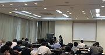
1学年 探究学習 ～伝える探究文化～
４月２６日（火） ６時限目
１学年、普通科を対象として、体育館で探究学習の授業が行われました。
本時は、３年生が取り組んできた探究学習の成果発表を聞きました。
３年生は、１・２年次に、テーマを決めて探究学習を進めてきました。今回は、昨年度まで研究してきた内容について英語での発表を含めて、４種類の発表を行いました。
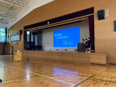 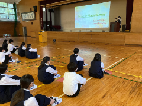
この時間の目的は、佐倉高校生が育んできた課題研究の文化や取り組みを１年生に知ってもらうための機会として設けられています。
１年生は、これから総合的な探究の時間で、各自テーマを決めて研究を始めます。
最後には、３年生のような研究ができるように取り組んでほしいと思います。
１学年、普通科を対象として、体育館で探究学習の授業が行われました。
本時は、３年生が取り組んできた探究学習の成果発表を聞きました。
３年生は、１・２年次に、テーマを決めて探究学習を進めてきました。今回は、昨年度まで研究してきた内容について英語での発表を含めて、４種類の発表を行いました。
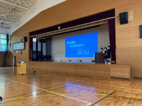 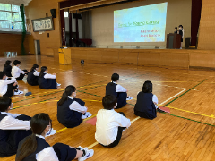
この時間の目的は、佐倉高校生が育んできた課題研究の文化や取り組みを１年生に知ってもらうための機会として設けられています。
１年生は、これから総合的な探究の時間で、各自テーマを決めて研究を始めます。
最後には、３年生のような研究ができるように取り組んでほしいと思います。
 教育相談職員研修
教育相談職員研修
4月14日(木) 15:20～16:10 本校スクールカウンセラーを講師に、教育相談研修を行いました。
生徒を取り巻く環境の変化や具体的な事例を取り上げ、生徒に寄り添った効果的な支援について学びました。
個のニーズに応じた支援の重要性を再確認できた貴重な機会となりました。
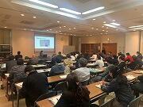
生徒を取り巻く環境の変化や具体的な事例を取り上げ、生徒に寄り添った効果的な支援について学びました。
個のニーズに応じた支援の重要性を再確認できた貴重な機会となりました。
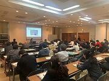
令和4年度 入学式・校章贈呈式
4月7日（木）
敷地内に咲く満開の桜に囲まれて、令和4年度千葉県立佐倉高等学校入学式が挙行されました。
新入生は、式開始前に、日程の式の流れの確認等を行いました。
[担任の先生の名前やクラスメートの名前は覚えられましたか？]
[新入生も緊張していますが、担任の先生も緊張していますよ]
今年度も昨年度に引き続き、新型コロナウイルス感染症の対策を万全に行い実施されました。
各クラスの呼名が終了し、校長より、普通科280名、理数科40名、計320名の入学が許可されました。
また、校長より、「高度情報化社会に活躍する人材となるよう、普段の学習を大切にすること、成人年齢が18歳へ引き下げられる法律が施行されたため、３年間の学校生活で成人としての準備をして欲しい」との言葉をいただきました。
それぞれの目標に向かって取り組んで欲しいと思います。
その後の校章贈呈式では、佐倉高校同窓会である鹿山会の会長より校章が贈呈され、新入生にも挨拶をいただきました。
生徒に渡されたのは、藩校から数えて、230年の伝統ある、佐倉高校の校章です。
会長からは、ご祝辞と佐倉高校の歴史、鹿山会の紹介をしていただきました。
新入生は、明日より新たな環境での生活が開始されます。学習や行事などの学校生活の大きな期待と少しの不安もあるかと思いますが、新入生の皆さんには、佐倉高校の校訓である、「質実剛健、積極進取、独立自尊」を忘れずに日々の活動に取り組んでもらえればと思います。
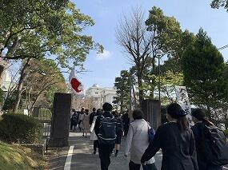 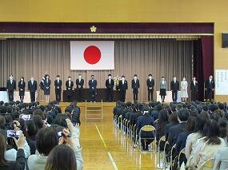
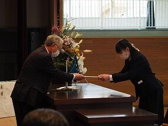
敷地内に咲く満開の桜に囲まれて、令和4年度千葉県立佐倉高等学校入学式が挙行されました。
新入生は、式開始前に、日程の式の流れの確認等を行いました。
[担任の先生の名前やクラスメートの名前は覚えられましたか？]
[新入生も緊張していますが、担任の先生も緊張していますよ]
今年度も昨年度に引き続き、新型コロナウイルス感染症の対策を万全に行い実施されました。
各クラスの呼名が終了し、校長より、普通科280名、理数科40名、計320名の入学が許可されました。
また、校長より、「高度情報化社会に活躍する人材となるよう、普段の学習を大切にすること、成人年齢が18歳へ引き下げられる法律が施行されたため、３年間の学校生活で成人としての準備をして欲しい」との言葉をいただきました。
それぞれの目標に向かって取り組んで欲しいと思います。
その後の校章贈呈式では、佐倉高校同窓会である鹿山会の会長より校章が贈呈され、新入生にも挨拶をいただきました。
生徒に渡されたのは、藩校から数えて、230年の伝統ある、佐倉高校の校章です。
会長からは、ご祝辞と佐倉高校の歴史、鹿山会の紹介をしていただきました。
新入生は、明日より新たな環境での生活が開始されます。学習や行事などの学校生活の大きな期待と少しの不安もあるかと思いますが、新入生の皆さんには、佐倉高校の校訓である、「質実剛健、積極進取、独立自尊」を忘れずに日々の活動に取り組んでもらえればと思います。
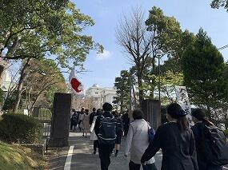 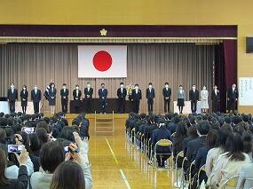
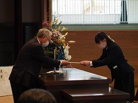
令和4年度 着任式・前期始業式
投稿日時 : 2022/04/06
sakura-h
令和4年度の着任式・前期始業式が挙行されました。感染状況を鑑み、マスク着用等の感染対策を徹底した上で、2年ぶりに体育館に生徒が集合する形での挙行となりました。今年度14名の職員が新着任されました。生徒会長より歓迎の挨拶があり、その後、新着任職員を代表して教頭より、「一日も早く学校に慣れ、皆さんの力になりたいと思います。」と挨拶がありました。また、学校長からは、「感染対策の徹底と、変化する国際情勢に合わせて世界で活躍できる人材になれるよう学び続けて欲しい。」というメッセージが贈られました。新年度が本日よりスタートします。各自目標を立てて、有意義な一年になるよう取り組みを期待します。
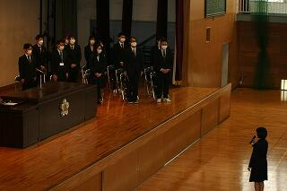 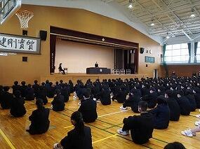
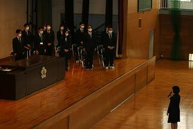 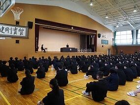
2022 国公立大学合格状況速報（前期判明分）
投稿日時 : 2022/03/14
sakura-h
東京大(１名) 京都大(2名) 一橋大(1名) 東工大(2名) 北海道大(3名) 東北大(3名) 大阪大(1名) 神戸大(1名)
名古屋大(1名) 九州大(2名) 難関国公立大 計17名
千葉大44名 他国公立大学49名 となり、前期国公立大学合格者は合計110名になりました。現役生難関国立１０大学で合格報告を受け、過去最高の快挙を成し遂げました。３年生の皆さんが本当に最後まで粘り強く取り組んでくれました。
進路状況の詳細については改めてお知らせする予定です。
名古屋大(1名) 九州大(2名) 難関国公立大 計17名
千葉大44名 他国公立大学49名 となり、前期国公立大学合格者は合計110名になりました。現役生難関国立１０大学で合格報告を受け、過去最高の快挙を成し遂げました。３年生の皆さんが本当に最後まで粘り強く取り組んでくれました。
進路状況の詳細については改めてお知らせする予定です。
第74回卒業証書授与式
3月8日(火) 第74回卒業証書授与式が挙行されました。新型コロナウイルス感染症に係るまん延防止等重点措置期間が延長される中での実施となりましたが、十分な感染症防止対策のもと、皆様の御理解と御協力を賜り、無事に式を終えることができました。心より感謝申し上げます。卒業生代表からは「個性豊かな仲間と出会い、そして多くの学びを得る機会をもたらしてくれた佐倉高校に感謝しています。」と別れの挨拶があり、学校長からは「Withコロナの新しい時代の中でみなさんの発想力と行動力で次の時代を切り拓いてほしい」とメッセージが贈られました。卒業生のみなさんの更なるご活躍とご健康を心より祈念いたします。

SSH・普通科探究オンライン発表会（午後）
投稿日時 : 2022/02/07
探究担当
2月2日(水)午後、普通科・理数科代表生徒によるオンライン発表会が開催されました。
発表タイトルを紹介します。
「草木染め〜君と染める未来〜」（普通科日本語発表）
「草木染め〜君と染める未来〜」（普通科日本語発表）
「Food waste in Convenience store」（普通科英語発表）
「簡易濾過装置のろ材に関する研究」（SSH発表）
「海洋中のマイクロプラスチックの回収方法」（SSH発表）
全国の参加者から多くの御助言・御質問をいただき、生徒の学びは深まりました。


SSH・普通科探究課題研究発表会（午前・全体会）
投稿日時 : 2022/02/03
探究担当
2月2日(水)、本校の課題研究の大目標である最終発表会が開催されました。この日の校内は授業はなく課題研究一色になります。午前の全体会では172の研究班が22会場に分れ、発表と質疑が繰り広げられました。午後は代表生徒がオンラインを通じて校外に発信しました。今回は午前の全体会の様子をお伝えします。１・２学年の全生徒が参加します。今回の発表班は普通科149班（英語発表16班）、理数科23班にのぼりました。4人標準の研究班が中心ですが、少人数・個人も存在します。研究テーマは自らが設定し、フィールドワークと実験を繰り返します。中間発表など幾く段階もの発表を経て本日に至っています。発表会場は、学年・テーマ・SSH班・英語班などまぜこぜにし多様な研究と出会えるようにします。発表時間は7分、発表会の醍醐味である質疑も7分間で設けています。全生徒が参加することにより本校に根付いた課題研究文化が未来に継承されます。


課題研究「学びの発表会」開催
投稿日時 : 2022/01/26
探究担当
1月25日(火)、172の研究班が参加した「学びの発表会」が開催されました。これは本校では準決勝に位置づけられている発表会です。普通科課題研究とSSH課題研究をまぜこぜにし、同一学年内でシャフルし、初見で多様な発表を学び合います。本校では質問の「あたりまえ化」を推進しており、発表７分・質疑７分で進行します。また英語発表に取り組んでいる班は３つの専用会場を作り、質疑も含めてすべて英語で発表活動を行いました。英語発表会場には、２週間前からの健康観察、当日の検温、密の回避等の感染症対策を十分に講じた上で、ＡＬＴ、千葉大学の留学生をゲスト助言者として招き、質疑や感想などを英語で行なってもらいました。来週2月2日には、学年も普通科・理数科も発表言語も、すべての枠を取り払った佐倉課題研究発表会を開催します。


１学年普通科課題研究クラス発表会
投稿日時 : 2022/01/20
探究担当
1月18日(火)、１学年普通科課題研究クラス発表会を開催しました。１年間探究の手法を学ぶのと同時並行で課題研究をすすめてきました。自ら研究テーマを設定し、手探りでゴールを目指す試行錯誤の連続だったと思います。成功より失敗の体験の方が多かったと思いますが、それが一番の財産になります。2月2日の佐倉課題研究発表会にむけてブラッシュアップが続きます。


中学生の皆さんへ
在校生・卒業生の方へ
アクセスカウンタ
2
0
4
4
7
7
1
リンクリスト